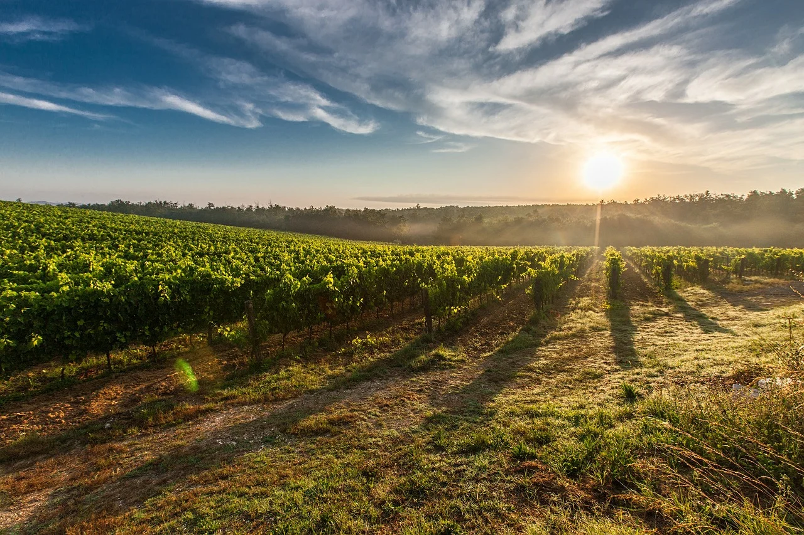
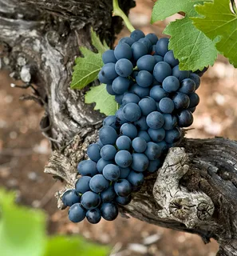
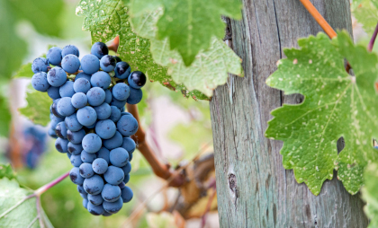
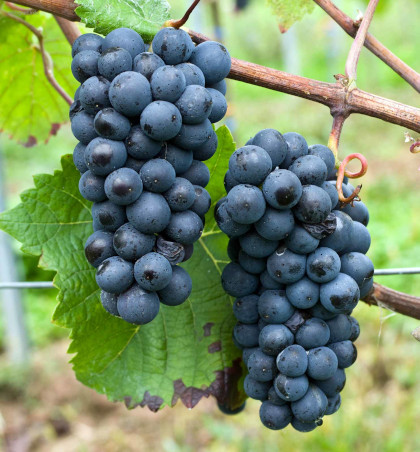

Основные сорта винограда Австралии
В Австралии выращивается более семидесяти сортов винограда, из них наиболее значимые: Шираз, Мерло, Пино Нуар, Гренаш, Семильон
Шираз
К 2015 году каждая вторая бутылка производимого в Австралии красного вина была ширазом — он стал лидером среди сортов в стране. Этот австралийский сорт выращивается почти в каждом винодельческом регионе страны. Последние 20 лет шираз, приняв эстафету у шардоне, вышел на первое место среди австралийских вин по экспорту. Неудивительно, что Австралия — вторая в мире после Франции по производству шираза. Каберне Совиньон В последние 15 лет производство каберне совиньона заметно упало, хотя прежде развивалось с невероятной скоростью. В любом случае благодаря объему посадок и продаж каберне совиньон также считается одним из главных сортов в виноделии.
Мерло
Считается, что австралийское красное — это в первую очередь шираз. Однако мерло также заслуживает внимания: в стране производится несколько выдающихся его сортов. Многие местные виноделы активно используют его в ассамбляжах (Cabernet-Merlot). Большинство ассамбляжных вин на основе мерло создаются из Западной Австралии (Маргарет-Ривер). Что до моносортных вин, ими славятся более прохладные регионы юга — Кунаварра, Клэр Вэлли
Пино Нуар
Относительно новый для Австралии сорт, в последние десятилетия неплохо заявил о себе. Общая площадь посадок винограда выросла в 90-е годы почти в 2 раза, а уровень их качества дорос до мировой винной арены. Вина из этого сорта, произведенные в долине Ярра (п-в Морнигтон в Тасмании), отличаются более тонким характером.